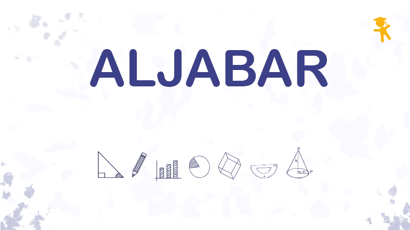
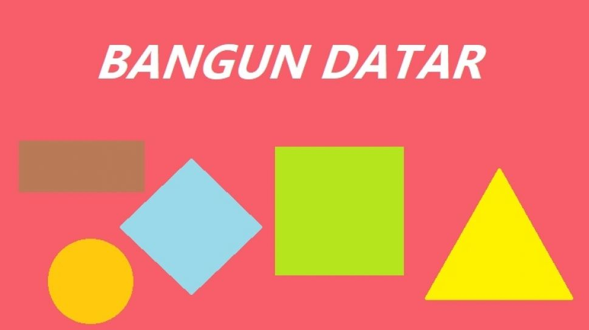
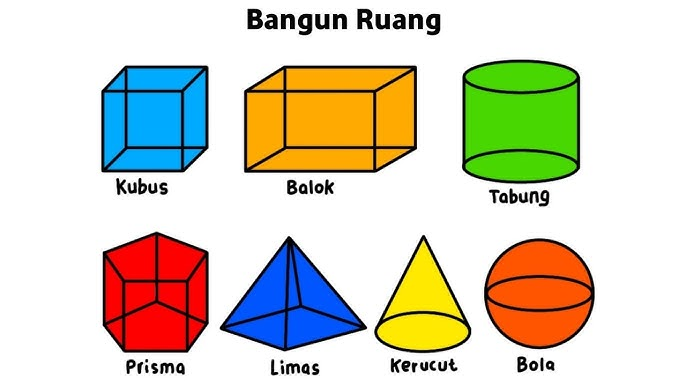
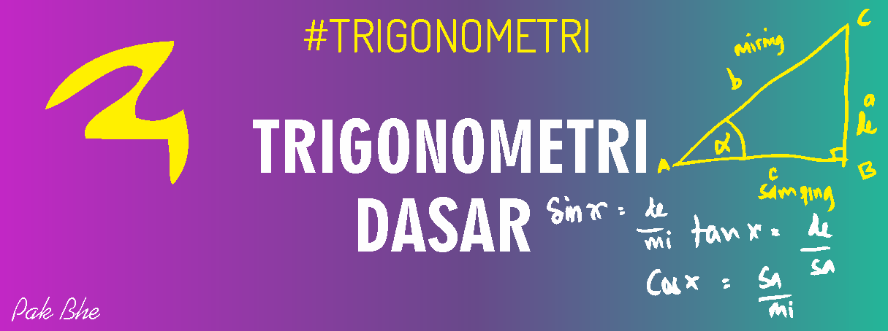

Daftar Artikel

Aljabar Linear dan Penerapannya dalam Ilmu Komputer
Aljabar linear mempelajari vektor, matriks, dan sistem persamaan linear.

Pengertian Bangun Datar dan Contoh-Contohnya
Artikel ini menjelaskan konsep bangun datar, jenis-jenisnya, serta rumus luas dan keliling.

Rumus Bangun Ruang dan Aplikasinya dalam Kehidupan
Bangun ruang adalah bentuk tiga dimensi yang memiliki panjang, lebar, dan tinggi.
Bilangan Prima: Definisi dan Cara Menentukannya
Bilangan prima adalah bilangan yang hanya dapat dibagi oleh 1 dan dirinya sendiri.

Fungsi Matematika dan Pentingnya dalam Teknologi
Fungsi matematika menghubungkan setiap elemen pada himpunan domain dengan tepat satu elemen di himpunan kodomain.

Statistika Dasar: Mean, Median, dan Modus
Artikel ini menjelaskan apa itu mean, median dan modus.

Mengenal Trigonometri dan Manfaatnya
Trigonometri adalah cabang matematika yang mempelajari hubungan antara sudut dan sisi dalam segitiga.